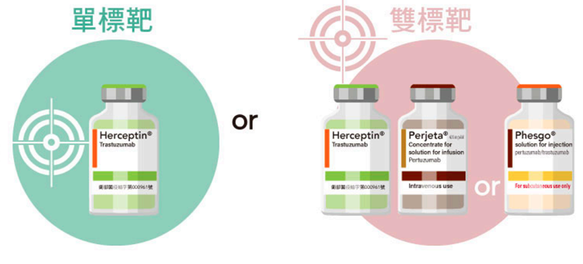
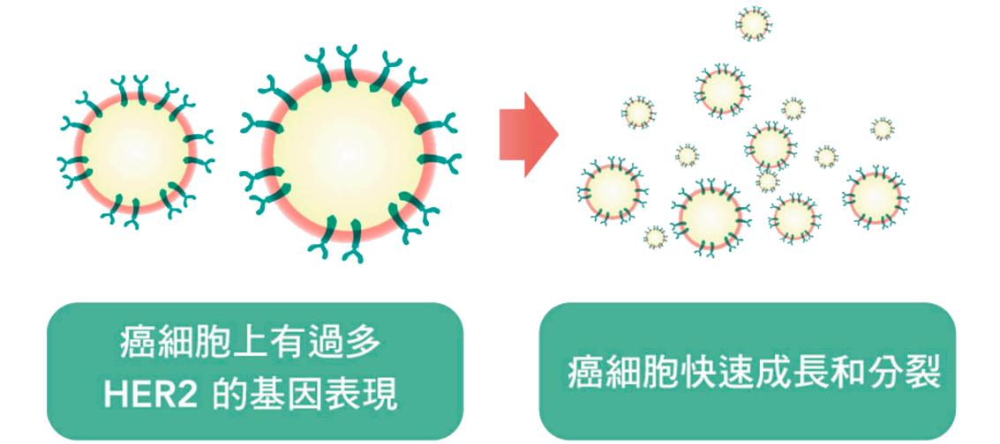

當醫師診斷您是HER2乳癌，而決定先接受術前輔助治療後再手術時，您可以有「單標靶藥物」或「雙標靶藥物」，兩種藥物選項。請跟著我們的步驟，一步一步的去探索，期望能幫您做出最合適的治療。

HER2受體存在於所有細胞表面，包括健康的細胞和癌細胞。然而HER2陽性乳癌細胞比正常細胞具有更多的HER2受體，過量的HER2使這些癌細胞快速成長和分裂，導致腫瘤的形成，是復發、死亡的高危險群。

術前輔助治療是指在手術前所給的治療，可以縮小腫瘤、減少手術範圍，了解選擇藥物的治療效果，以及幫助我們選擇較合適的術後輔助療法等。